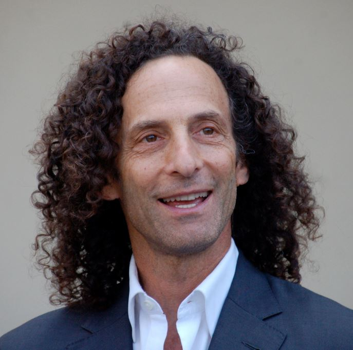
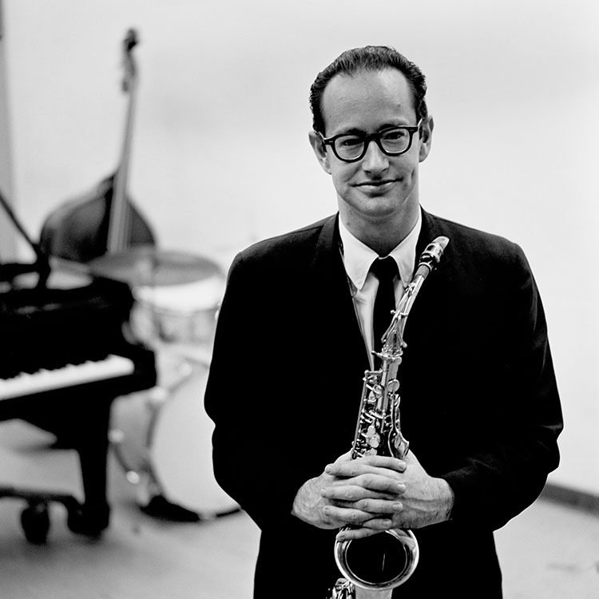

Famous Saxophonists:
-

Kenny G
Kenneth Bruce Gorelick (born June 5, 1956), better known by his stage name Kenny G, is an American jazz saxophonist.
His 1986 album, Duotones, brought him commercial success. Kenny G is one of the best-selling artists of all time, with global sales totaling more than 75 million records. Kenny G's career started with a job as a sideman for Barry White's Love Unlimited Orchestra in 1973; he was 17 and still in high school.
He continued to play professionally while studying for a major in accounting at the University of Washington in Seattle, and graduated Phi Beta Kappa and magna cum laude.
He played with the funk band Cold, Bold and Together before becoming a credited member of The Jeff Lorber Fusion.
He began his solo career after his period with Lorber. -

Kaori Kobayashi
Kaori Kobayashi was born on October 20, 1981 in the Kanagawa Prefecture. Her father was a photographer and her mother, a piano teacher.
Beginning at a very young age, Kobayashi learned to play the piano. When she was 13 years old she joined a brass band and started to play the flute. Four years later she stopped playing in the band, instead choosing to start a relationship with the saxophone.
Then she turned to jazz.
Another four years later, having learned from Bob Zangu how to play the saxophone in a jazz setting, she entered the Senzoku College of Music.
After graduating, she got a contract with the label Victor Entertainment and her first album, Solar, appeared. -

Paul Desmond
Paul Desmond (born Paul Emil Breitenfeld, November 25, 1924 – May 30, 1977) was an American jazz alto saxophonist and composer, best known for his work with the Dave Brubeck Quartet and for composing that group's biggest hit, "Take Five".
He was one of the most popular musicians to come out of the cool jazz scene. In addition to his work with Brubeck,
he led several groups and collaborated with Gerry Mulligan, Chet Baker, Jim Hall, and Ed Bickert.
After years of chain smoking and poor health, Desmond succumbed to lung cancer in 1977 after a tour with Brubeck. Yet this was enough time for him to compose works of art which brought him fame.